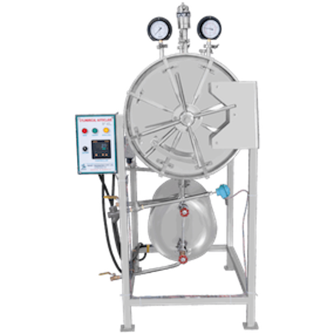
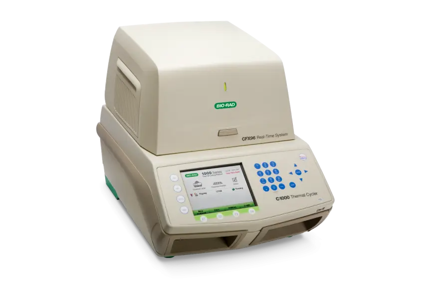
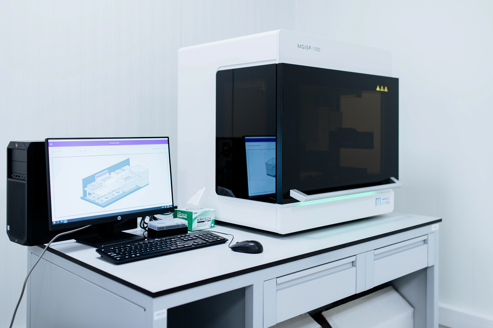
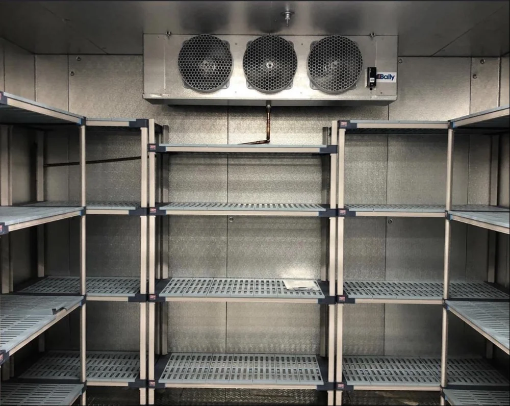
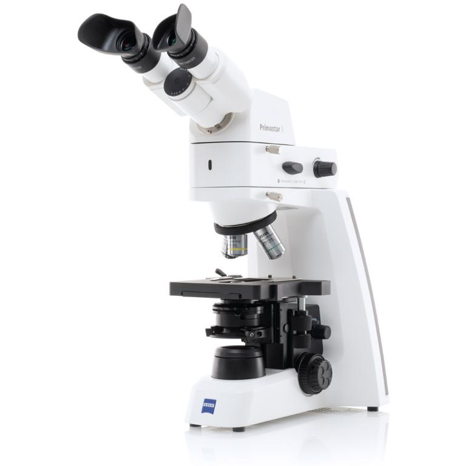
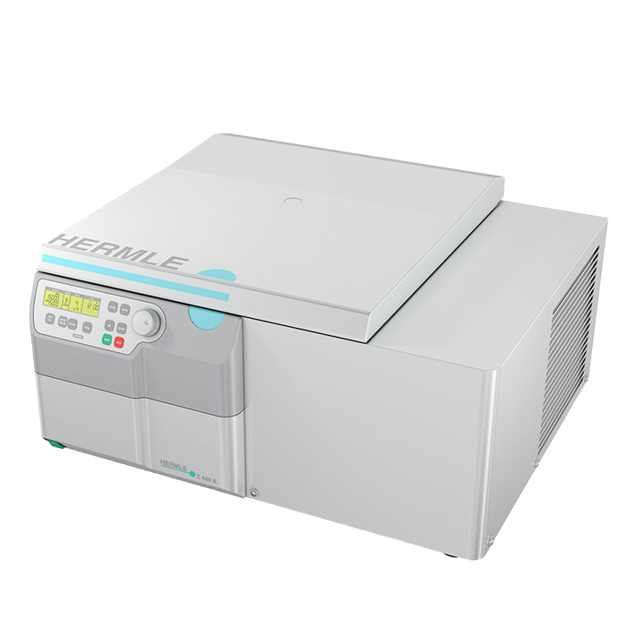
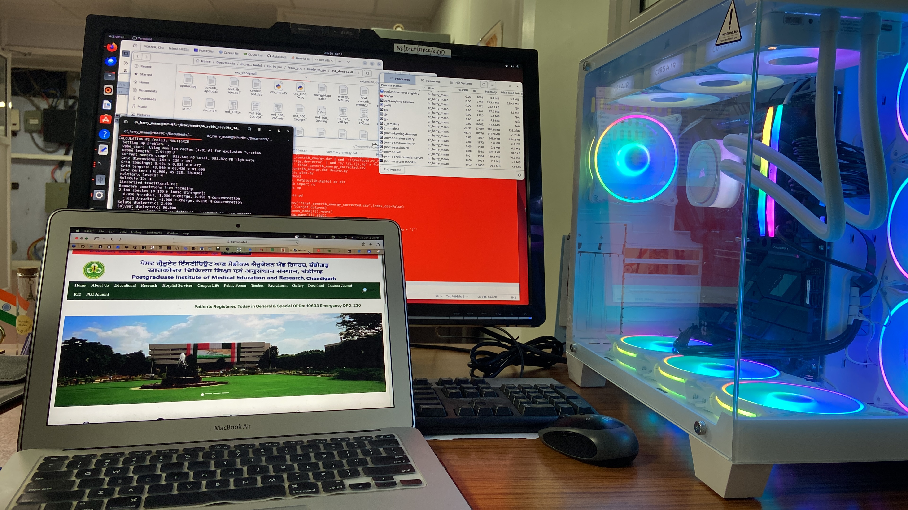

Laboratory Instruments
State-of-the-art equipment for microbiology, molecular diagnostics, and computational structural biology at ICMR-NIIRNCD, Jodhpur

Autoclave
Model: Horizontal, GTA003
DOI: 16/8/2017

Real-Time PCR Machine
Model: Bio-Rad CFX96 Touch
DOI: 26/05/2021

Automated RNA Extraction Machine
Model: MGISP-100b
DOI: 03/07/2020

Walk In Chambers
Model: BLUE STAR
DOI: 21/08/2017

Fluorescence Microscope
Model:Primostar 3 iLED
DOI: 07/10/1988

Laminar Air Flow System
Model: Kartos International
DOI: 05/03/2004

Cold Centrifuge
Model: Hermle-Z446K
DOI: ...

High-End Workstation GPU accelerated
Model: ASUS-RTX-5070Ti
DOI/Reference: Autoclave Uses [web:35]